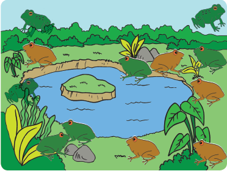

ayo cari tahu
Di kolam yang Edo temukan tadi, ternyata ada sekelompok katak yang berjumlah 12 ekor dengan warna berbeda. Betapa gembiranya Edo dan teman-temannya melihat katak berbeda warna di sana. Dari 12 katak yang ada, 3 katak berwarna hijau, 4 katak berwarna hijau dengan punggung totol-totol, sedangkan sisanya berwarna coklat. Edo bertanya dalam hati apakah katak-katak tersebut dapat dinyatakan dalam pecahan.
Ia ingat sebelumnya telah belajar bahwa pecahan dapat berarti bagian dari satu, dan dapat berarti bagian dari kelompok.
Nah, perhatikan katak-katak yang ada di kolam tersebut.

Bagaimana kamu menggambarkan
pecahan katak berwarna hijau di antara
katak-katak yang ada?
Tuliskan Pecahannya!